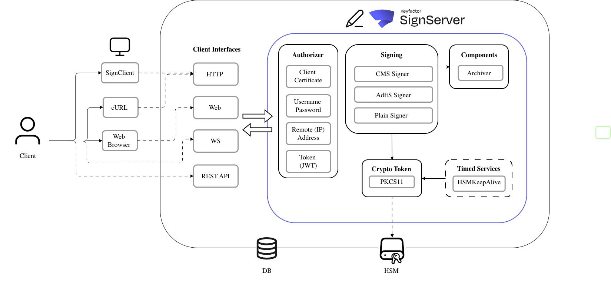

Architecture & Core Concepts
The following outlines the flexible, component-based architecture of SignServer:

The integration choice determines how you access SignServer. The integration interfaces also differ based on the Administration or Client roles.
Within SignServer, the cryptographic and signing-related tasks are performed by Workers, with components such as crypto tokens enabling additional functionality.
The integration and configured Workers determine the application of your SignServer deployment.
Integration Options
The SignServer Interfaces provide different functionalities based on integration and roles.
Administrative Interfaces
SignServer provides multiple interfaces for administrating Workers and key management, as well as querying the audit log and archive. SignServer can be managed from the command line, a graphical user interface, or be integrated directly from your application using Web Services. For more information, see Administration Interfaces.
Client Interfaces
SignServer provides multiple client interfaces for submitting files or data for signing. SignServer can be used with either a standard web browser, the client application SignClient, or implemented with your own application using, for instance, the Client HTTP Interface. For more information, see Client Interfaces.
Workers
Workers are core execution units that perform or coordinate various cryptographic and signing-related tasks. Workers are configurable units, each with defined responsibilities.
Internally in SignServer, Workers and components handle the requests, perform the authentication and authorization, or interact with external components.
For more information, see Workers & Components.
What is a Worker?
Workers are configured to perform certain activities like signing files of a certain type, often with a specific key.
A Worker is a configured entity in SignServer that carries out certain activities: signing, validation, dispatching, timed tasks, and so on.
Each Worker has its own configuration (properties), a unique ID, and optionally a human-readable name.
Components provide specific functionality and are configured in the Workers.
Worker Types
SignServer has many different Workers, each with specific functionalities.
The following lists some of the more common categories of Workers:
Signers: Specifies how to perform the signature creation, and which key and certificate to use.
Crypto Worker: Holds the Crypto Token component that is used to access key material.
Dispatchers: Forwards requests to other Workers.
Timed Services: Runs at a fixed time interval for setting up an hourly timed service keeping.
Components
The SignServer Components provide specific functionality and are configured in the Workers.
The following lists some of the general component categories:
Archivers: Stores requests or responses to a database.
Authorizers: Decides if a request should be allowed or not.
Other Features
Integration with EJBCA
A SignServer instance can be connected to EJBCA with an EJBCA instance using peer connections.
For more information, see Peer Systems.
External CAs
You can get document signer certificates, such as PDF signing certificates, signed by public recognized CAs using PKCS#10.